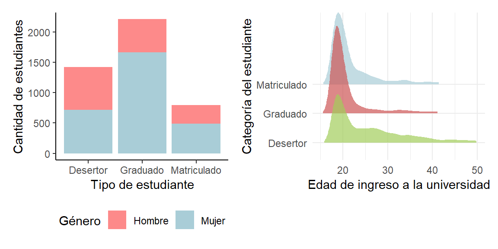
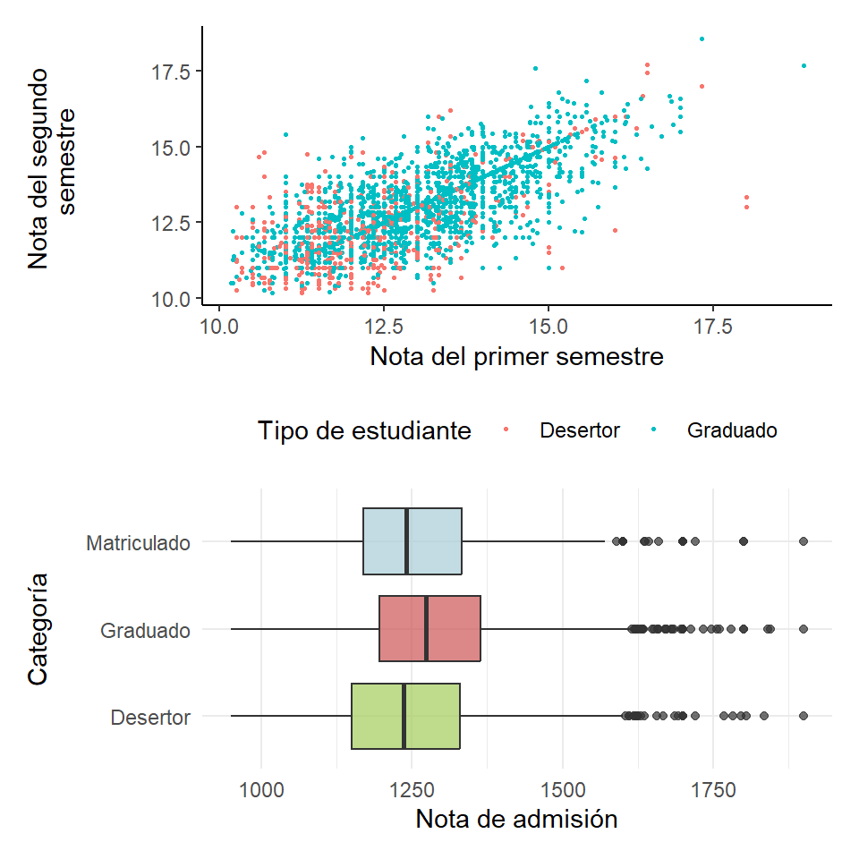

Existen múltiples factores externos que pueden influir sobre el desempeño académico de un estudiante. El propósito de esta investigación es analizar la interacción de las variables sociales, económicas, académicas y familiares en la trayectoria académica de un estudiante universitario. Para abordar el objetivo planteado, se realizó un análisis exploratorio de una base de datos elaborada por Realinho et al. (2022). Esta base contiene información sobre las características socioeconómicas y académicas de 4424 estudiantes que ingresaron a una universidad en Portugal entre 2008 y 2018. El principal programa utilizado fue RStudio, donde se generaron múltiples tablas y gráficos que estudian la relación entre el rendimiento académico y las variables relevantes según la literatura. Se encontró que factores económicos como el goce de una beca y la puntualidad en los pagos de las cuotas tienen una fuerte relación con la permanencia del estudiante en la carrera. Asimismo, características demográficas como la edad de ingreso a la universidad y el género resultaron ser significativas sobre el rendimiento. Otros factores académicos, como el promedio de admisión a la universidad y las calificaciones obtenidas en los primeros dos semestres se identificaron como indicadores del rendimiento futuro del estudiante. Por otro lado, se observó que los antecedentes académicos del núcleo familiar del estudiante no son determinantes para su desempeño. Así, se concluye que el rendimiento académico de los estudiantes universitarios es un fenómeno complejo vinculado a diversas variables interconectadas. Finalmente, se propone que futuras investigaciones contemplen la posibilidad de ampliar el análisis de este tema mediante la aplicación de métodos estadísticos de carácter numérico.
Rendimiento académico, deserción estudiantil, factores socioeconómicos, factores familiares
La educación es el motor de cualquier sociedad, sirve como mecanismo para expandir el conocimiento y enriquecer la cultura. A su vez, es una herramienta capaz de combatir la pobreza, mejorar la salud y lograr la igualdad de género. Sin embargo, una problemática creciente es la cantidad de personas que no completan sus estudios, ya sean de primaria, secundaria o educación superior. De estos niveles educativos, el abandono de la educación superior es el eje central de esta investigación.
La formación de profesionales es un peldaño fundamental en el crecimiento económico y exploración del conocimiento para cualquier nación por lo que la permanencia en los centros de educación universitaria es fundamental. No obstante, no es un trabajo sencillo encontrar las causas del abandono de esta etapa de la educación para de esta manera ayudar a contrarrestarlas. Es así, que se busca analizar la manera en que los factores sociales, económicos, académicos y familiares influyen en la trayectoria académica de la persona estudiante.
El contexto actual de la educación superior revela que a pesar de los esfuerzos por incrementar las tasas de graduación, la deserción sigue siendo un desafío significativo. La literatura existente sugiere que el nivel educativo de los padres, la estabilidad económica, el rendimiento académico anterior, el género, la movilidad geográfica, entre otros factores son clave para que el estudiante tome la decisión de desertar o continuar con sus estudios. Sin embargo, algunas fuentes son contradictorias acerca de qué tanta influencia tienen en tal decisión, lo que abre un espacio para un análisis más detallado, contextualizado y aplicado. Este trabajo se propone contribuir al conocimiento existente mediante un análisis tanto cualitativo como cuantitativo entre las variables brindadas por una base de datos de estudiantes en una universidad europea entre el 2008 y el 2018.
Mediante los datos provenientes de la base mencionada, que abarca información tanto demográfica, académica y socioeconómica de los estudiantes se pretende descubrir patrones y correlaciones que permitan entender mejor las razones detrás de la permanencia o abandono de la educación superior. Principalmente, se pretende reconocer aquellos factores que tienen mayor incidencia sobre el abandono de los estudios. El objetivo es identificar las variables críticas que afectan la decisión de continuar o no la carrera universitaria para tener una base con la cual se pueden crear estrategias efectivas en contra de la deserción universitaria. Para lograrlo, se empleará un análisis estadístico basado en la visualización de datos mediante gráficas y tablas.
Para la disminución de este fenómeno es fundamental fomentar el diálogo entre las instituciones gubernamentales y educativas ya que los factores que influyen en la deserción estudiantil están estrechamente interconectados. Se busca promover la reflexión para incentivar la mejora y expansión de las políticas y ayudas existentes en torno a este problema. Es importante que estas medidas reconozcan que la deserción no es el resultado de un único factor, sino una combinación de varios, por lo que se requiere planes integrales que aborden la complejidad del tema atacando múltiples factores simultáneamente.
El análisis de factores que influyen sobre el desempeño académico universitario, en especial, factores económicos, sociales, académicos y familiares, requiere de una metodología que logre segmentar el impacto de cada uno de estos factores por separado y así concluir sobre estos, así como sugerir cuáles son los que se deben considerar para investigaciones a futuro. Se implementará el uso de gráficas y tablas elaboradas en RStudio basándose en las metodologías planteadas en el libro “R for Data Science” Wickham y Grolemund (2017) donde se proporciona un enfoque para el análisis de datos considerando la importación, limpieza y visualización de los datos utilizando el sistema tidyverse como herramienta principal. Estos pasos se caracterizan de la siguiente manera: primero, la importación de datos y la limpieza de los mismos establecen las bases para la realización de la investigación donde mediante paquetes como “readr” se carga una base de datos y se procede a implementar estructuras como “filter(), select(), mutate()”. Estos métodos permiten generar o eliminar datos según su importancia, así como clasificar información repetida para que sea más fácil su lectura. Luego mediante la herramienta “ggplot” se genera la visualización de los datos en gráficas relacionando variables que según la literatura resulta interesante de estudiar.
Para este estudio resulta indispensable tener una base a la cual aplicar los métodos propuestos por Wickham y Grolemund (2017), para ello se cuenta con una base de datos recolectada por Realinho (2022). Esta base cuenta con 4424 registros de estudiantes de distintas universidades europeas donde se incluyen variables continuas, discretas, binarias y otras que definen características económicas, sociales, educativas, y otras más de los estudiantes. Como resultado principal se registra la deserción del estudiante o el éxito académico proponiendo una variable “target” que cuenta con tres opciones: graduado, desertor o matriculado, que define el tipo de estudiante luego de un año de estudios.
La variable categórica “target” es de suma importancia para la presente investigación y es el principal resultado de la base de datos. Para evaluar su relación con otros factores se seleccionaron diez variables adicionales que abarcan las áreas familiar, académica, social y económica. Para el entorno económico, se considerarán tres variables binarias: si el estudiante cuenta con retrasos en sus cuotas de matrícula, si este cuenta con beca y finalmente si el estudiante requirió desplazarse de su hogar para realizar sus estudios superiores. Para el área académica, se analizaran dos variables continuas las cuales son, sus notas de admisión y sus promedios durante el primer año lectivo respectivamente. En el área social, se incluirá el género del estudiante y su edad al ser admitido. Finalmente, en el área familiar se considerará el nivel educativo de tanto el padre y la madre de cada estudiante.
El tipo de datos que se plantean en la base de datos resulta de gran interés según Realinho et al. (2022), debido a la riqueza y diversidad de los mismos, lo que justifica la implementación de múltiples técnicas de análisis de datos para capturar los impactos del estudio.
El objetivo de esta sección de resultados es presentar un desglose de los hallazgos obtenidos a partir de la metodología descrita anteriormente, la cual consiste en gráficos de diferentes estilos que exploran las relaciones entre las distintas variables que ofrece la base de datos escogida. De esta manera, es posible aproximarse a una respuesta más concreta para la pregunta de investigación planteada inicialmente, es decir, la identificación de los factores sociales, económicos, académicos y familiares que tienen un mayor impacto en la trayectoria académica de un estudiante, especialmente en cuanto a la decisión de concluir los estudios universitarios o abandonarlos. También, se busca comparar y contrastar los resultados propios de este estudio con los argumentos propuestos por otros autores, para así contribuir al conocimiento general del tema e incluso hallar vacíos en la literatura existente.
La Figura 1 cubre los resultados más significativos en cuanto al ámbito social, donde se observaron dos tendencias relacionadas al género del estudiante y su edad al ingresar a la universidad. La figura de la izquierda se enfoca en la relación significativa entre el género de los estudiantes y su permanencia en la carrera. En este gráfico de barras segmentado se observan dos variables categóricas: el género y el tipo de estudiante, lo cual permitió apreciar que la cantidad de estudiantes mujeres graduadas es significativamente mayor a la cantidad de estudiantes hombres graduados. Según la investigación realizada por Izar Landeta (2011) una de las variables con mayor influencia en el rendimiento académico probó ser el género, siendo las mujeres aquellas con un rendimiento académico mayor en comparación de sus compañeros hombres, lo que encaja con este gráfico. Sin embargo, es importante notar que no hay una diferencia significativa entre géneros dentro de la categoría de desertor. Otra consideración pertinente es que al tomar en cuenta sólo dos géneros, existe una parte de la población que queda totalmente fuera del estudio, pero este problema viene desde el origen de los datos.
Por otro lado, la figura de la derecha muestra la influencia de la edad de ingreso a la universidad sobre la permanencia en la carrera. Para esto, se representaron las edades de admisión a la universidad según la categoría del estudiante, mediante un gráfico de densidades tipo ridgeline. Un resultado predecible es el hecho de que en todos los grupos, la mayor densidad ocurre entre los 18 y los 20 años, lo cual no es sorprendente dado que una gran cantidad de los estudiantes que ingresan a las universidades acaban de concluir los estudios secundarios. Más interesante es la distribución de la densidad del grupo de desertores, que son la categoría con mayor densidad después de los 25 años y los únicos con una densidad apreciable más allá de los 42 años. Por el contrario, la gran mayoría de los estudiantes graduados o matriculados entraron a la universidad con menos de 25 años. Lejos de una cuestión meramente etaria, estas tendencias pueden ser resultado de factores socioeconómicos, ya que es posible que los estudiantes que ingresan a una edad más avanzada se vean obligados a abandonar los estudios por responsabilidades laborales o familiares, razones que resalta Estrada-Ruiz (2015), especialmente en mujeres. Por otro lado, los estudiantes más jóvenes probablemente carecen de estas obligaciones y hasta reciben apoyo de sus familiares.
La Figura 2 reúne los principales hallazgos dentro de los factores económicos, conformada por gráficas que permiten visualizar el efecto sobre la permanencia en la carrera de: la capacidad de pago puntual de las cuotas escolares, el goce de una beca y la necesidad de desplazarse a la universidad. De izquierda a derecha, el primer gráfico, aborda la relación entre el cumplimiento de las cuotas escolares y la permanencia del estudiante en la carrera. Al plantear un gráfico de barras que muestra si un estudiante es deudor en cuotas escolares según su categoría (desertor, graduado o matriculado) se revela una fuerte tendencia. En los estudiantes graduados, ninguno o casi ninguno es deudor de cuotas escolares, lo cual es esperable dado que ya concluyeron sus estudios. Asimismo, es posible que la puntualidad de los pagos sea un requisito para los estudiantes matriculados. Sin embargo, lo más relevante es que en los estudiantes desertores existe una parte significativa de la población que es deudora, lo que muestra que la imposibilidad de pagar las cuotas escolares por dificultades económicas puede ser un factor de peso en la decisión de abandonar la carrera. Este hallazgo es consistente con Rivera y Vásquez (2023).
La segunda figura describe la incidencia sobre la permanencia en la carrera de la necesidad de desplazamiento a la universidad. Agrupando los estudiantes entre aquellos que tuvieron que desplazarse para asistir a la universidad y los que no, luego clasificándolos por su estado en la carrera (graduado, matriculado o desertor) y representando estos datos en un gráfico facetado de tipo treemap, se revelaron comportamientos interesantes. Primero, es destacable que entre los desplazados existe una menor cantidad de desertores que en los no desplazados, aunque en términos absolutos existen más estudiantes del primer grupo que del segundo. Otro resultado llamativo es que, dentro de los desplazados, la categoría de estudiantes graduados representan alrededor del 54,57%, mientras que en los no desplazados, los graduados componen el 44,29%. Lo anterior parece indicar que existe una mayor probabilidad de graduarse entre los estudiantes que tuvieron que mudarse para recibir una educación superior. Esto contradice los resultados de Rivera y Vásquez (2023), quienes argumentan que los costos de alquiler y transporte son algunos de los principales obstáculos que enfrentan los estudiantes para continuar con su carrera.
La Figura 3 ilustra el impacto de la obtención de una beca socioeconómica en la permanencia en la universidad. Esta gráfica de tipo heatmap muestra la frecuencia absoluta de cada combinación de las dos variables categóricas escogidas: tipo de estudiante y si es poseedor de beca. La conclusión es clara, pues dentro del grupo de los estudiantes poseedores de beca, los estudiantes graduados son los más numerosos, mientras que en los estudiantes sin beca, la diferencia entre las tres categorías no es tan significativa. Nuevamente se puede deducir que la situación económica que enfrenta cada estudiante tiene un gran impacto en su decisión de continuar con su carrera universitaria o no. Esta relación es recurrente en el material bibliográfico y ha sido estudiada en títulos como el de Sistemas Ecológicos de Urie Bronfenbrenner.

La Figura 4 abarca los factores académicos que mostraron consecuencias más marcadas sobre la trayectoria académica de los estudiantes universitarios. La gráfica de la izquierda ofrece información sobre el vínculo entre las notas del primer año y la decisión de continuar sus estudios superiores o desertar. Esta utiliza una representación de tipo scatter, con las notas del primer semestre como eje horizontal y las notas del segundo semestre en el vertical, también diferenciando entre estudiantes graduados y desertores mediante colores distintos. Basado en este gráfico, es posible concluir que, a grandes rasgos, los estudiantes con notas más altas durante tanto el primer como el segundo semestre son aquellos que con mayor frecuencia se gradúan. Por el contrario, aquellos estudiantes con notas más bajas al inicio de su carrera son más propensos a abandonar la educación superior. Por lo tanto, las primeras experiencias con la evaluación universitaria son importantes para las decisiones del estudiante. Esta tendencia, de mejores notas en las personas que eventualmente se gradúan se expone tanto por Martinez-Otero (2009), como por Lobos y Rodriguez (2022). Aunque la importancia que ambos textos le dan a este factor varía, ambos están de acuerdo en que el rendimiento académico sí forma parte de la decisión que es desertar.
En la segunda de la Figura 4, se presenta la importancia de la nota de admisión sobre la probabilidad de que un estudiante se gradúe. Al graficar la distribución de las notas de admisión según la categoría final del estudiante mediante un diagrama de cajas, se obtuvo un resultado previsible, aunque tal vez la tendencia no es tan fuerte como se esperaba. Es evidente que el valor de la mediana para los estudiantes graduados es mayor que el de los demás grupos. Además, en el tercer cuartil de la categoría de graduados se alcanzan valores más altos que en las otras dos. Similarmente, en el segundo cuartil de los desertores están contenidas notas más bajas que en las otras categorías. Estos resultados concuerdan con los hallazgos de Montero, Villalobos y Valverde (2007), que determinaron que el promedio de admisión tiene una relación positiva con el desempeño académico más adelante en la carrera. Sin embargo, la similitud de los “bigotes” entre las tres clasificaciones (lo cual indica una variabilidad similar de los valores en los tres grupos), así como la presencia de valores atípicos muy altos entre los desertores, hacen cuestionar la firmeza de esta tendencia.
Finalmente, la Figura 5 engloba los resultados referentes a factores familiares. En particular, trata de la relación entre la completitud de los estudios superiores de ambos padres y la permanencia del estudiante en la carrera. Para esto, se elaboró una gráfica de tipo heatmap en la cual se ilustra la frecuencia absoluta de cada posible combinación entre el nivel educativo de la madre y del padre según la categoría del estudiante. Se observa que no existe una diferencia significativa en los niveles educativos de los padres entre estudiantes graduados y estudiantes desertores. Esto contradice la suposición que entre mayor es el nivel educativo de los padres, mejores posibilidades de que sus hijos alcancen uno igual o mayor. Sin embargo, esta relación que a primera vista parece algo contradictoria, es respaldada por la literatura en el artículo de Izar Landeta (2011). Aunque parece que hay mayor cantidad de estudiantes graduados que desertores cuyos padres tienen educación primaria o secundaria, esto se debe a que el grupo de graduados es más numeroso que el grupo de desertores y no a una tendencia discernible. En todo caso, dada la gran cantidad de combinaciones entre el nivel educativo del padre y la madre se dificulta establecer una única conclusión global.
Antes de concluir, es oportuno mencionar otras relaciones entre variables que fueron exploradas, pero que no mostraron repercusiones importantes sobre la trayectoria académica de los estudiantes universitarios. Dentro de los factores académicos, se consideró el tipo de horario elegido por el estudiante (diurno o nocturno), así como la prioridad que tenía la universidad actual (en la que se recopilaron los datos de la base) dentro de una lista de universidades a las que fue admitido cada estudiante. Ambos factores fueron analizados por separado con respecto a la permanencia del estudiante en la carrera, pero no se encontraron diferencias notables entre los estudiantes graduados y los desertores en ninguno de los dos. En cuanto a factores de índole social, se contempló el estado civil del estudiante y si era extranjero o nacional, pero ninguna de las dos variables demostró comportamientos distintivos en las categorías de la variable objetivo.
Durante la presente investigación se propuso identificar y analizar los factores sociales, económicos, académicos y familiares que influyen sobre la decisión de abandonar o continuar los estudios universitarios de los estudiantes. Se tomó un estudio realizado en una universidad europea sobre la permanencia de los estudiantes en la carrera o el abandono de sus estudios universitarios, para así realizar un análisis cuantitativo y gráfico acerca de estos factores. Según la literatura sobre la educación superior se encontraron muchas relaciones de estos factores y teorías al respecto. Se consideró este tema de investigación debido a la necesidad de comprender mejor el desarrollo del capital humano en la educación superior. A su vez se quiere estudiar cómo mejorar las condiciones de educación para muchas personas, considerando el tiempo que demandan las responsabilidades laborales o familiares, así como el desplazamiento al centro educativo.
Se realizó un análisis cuantitativo que se basó en la visualización de datos mediante el uso de las herramientas vistas en el curso “Herramientas de Ciencia de Datos I”, como el manejo de una base de datos y la graficación con tidyverse y otras librerías de R. Se tomó una base de datos que contaba con 4424 registros de estudiantes europeos donde se consideraban más de 20 variables macroeconómicas, microeconómicas, sociales, familiares, entre otras. Entre estas variables se encontraron algunos patrones que pueden responder las preguntas planteadas.
Con respecto a los factores académicos se encontró una fuerte relación entre las notas del primer semestre y las notas de admisión de los estudiantes con la probabilidad de graduación de los mismos, ya que son aquellos quienes obtienen mejores notas o no reprueban algún curso los que continúan su trayectoria académica y en la mayoría de casos se consigue la graduación. Este comportamiento coincide con las teorías consultadas, en particular con Garbanzo Vargas (2013) y Montero Rojas (2007). Para los factores económicos se identificaron problemas que enfrentan los estudiantes como el ser poseedor de una beca socioeconómica o poder mantener sus cuotas escolares pagadas para poder continuar con sus estudios. El acceso a las becas mostró una clara influencia en la permanencia estudiantil ya que se encontró que los estudiantes becados presentaron una mayor proporción de graduaciones que los que no las portaban, dicho comportamiento se respalda con los hallazgos de Rivera y Vásquez (2023), pues los autores muestran que los gastos de transporte, matrícula, alimentación y demás son la principal causa del abandono de los estudios universitarios.
Al aplicar la metodología propuesta se encontró un resultado inesperado donde se contradecía la literatura al respecto, ya que los gráficos mostraron que los estudiantes que se necesitan desplazar de su hogar para poder estudiar muestran mayores tasas de graduación que los que no necesitan desplazarse. Por el contrario, según la teoría muchos factores económicos, sociales y familiares que conlleva el no desplazamiento pueden ayudar al estudiante, por ejemplo el estar cerca de su familia o no tener diversos gastos como los expuestos anteriormente.
Para las futuras investigaciones sobre la deserción estudiantil se recomienda incluir análisis que se compongan de la trayectoria completa del estudiante o de no ser posible agregar al menos un semestre más de estudios para estudiar cómo han evolucionado los factores anteriormente expuestos en la vida del estudiante. Se consideran como variables importantes la satisfacción estudiantil al completar los semestres para conocer el deseo del estudiante de seguir con la carrera seleccionada, algunas variables cualitativas como la motivación pueden revelar aún más información. Se pueden agregar estudios específicos de algunas áreas ya que se sabe que el área de letras y ciencias básicas son las que poseen una mayor tasa de deserción estudiantil en la mayoría de universidades. Para investigadores con mayor experiencia o conocimiento se puede incorporar un análisis multinivel donde se estudian las interacciones de los factores por separado para obtener un mismo resultado. Finalmente, este proyecto de investigación contribuye a llenar un vacío en la literatura al proporcionar un análisis de múltiples factores utilizando una base de datos actual y descubriendo una contradicción en la teoría al describir el impacto de los desplazamientos de los estudiantes. Estos descubrimientos y aportes abren líneas de investigación y cuestionan algunos supuestos sobre la deserción estudiantil.
Primeramente, queremos expresar nuestro más sincero agradecimiento a Maikol Solis, profesor del presente curso CA0204: Herramientas de Ciencia de Datos I. Su ayuda fue fundamental en la elaboración de esta investigación al proporcionar conocimiento de las herramientas a utilizar y propiciar un espacio donde poner en práctica habilidades tan importantes como la investigación y el pensamiento crítico.
Asimismo, agradecemos las valiosas contribuciones de la asistente del curso, Ana Laura López, quien a lo largo del desarrollo de esta investigación nos proporcionó retroalimentación muy acertada que nos permitió presentar la mejor versión posible del trabajo. Por último, se agradece inmensamente el apoyo de nuestros compañeros de curso que han sido partícipes de este proceso a nuestro lado y que brindaron sugerencias clave en el transcurso del mismo.
Referencias
Estrada-Ruiz, Marcos J. 2015. «Las jóvenes que desertan de la educación media: virajes y puntos de no retorno». Revista latinoamericana de Ciencias Sociales, Niñez y Juventud 13 (2): 995.
Garbanzo Vargas, Guiselle María. 2013. «Factores asociados al rendimiento académico en estudiantes universitarios desde el nivel socioeconómico: Un estudio en la Universidad de Costa Rica». Revista Electrónica Educare. https://www.redalyc.org/articulo.oa?id=194128798005 .
Izar Landeta, Carmen Berenice López Gama, Juan Manuel Ynzunza Cortés. 2011. «Factores que afectan el desempeño académico de los estudiantes de nivel superior en Rioverde, San Luis Potosí, México». CPU-e, Revista de Investigación Educativa. https://www.redalyc.org/articulo.oa?id=283121721005 .
Montero Rojas, Jeannette Valverde Bermúdez, Eiliana Villalobos Palma. 2007. «Factores institucionales, pedagógicos,psicosociales y sociodemográficosasociados al rendimiento académico en laUniversidad de Costa Rica: un análisismultinivel». RELIEVE. Revista Electrónica de Investigación y Evaluación Educativa. https://www.redalyc.org/articulo.oa?id=91613205 .
Realinho, Valemtim, Jorge Machado, Luís Baptista, y Monica Martins. 2022. «Predicting Student Dropout and Academic Success». Data 7 (11). https://doi.org/10.3390/data7110146.
Rivera, Marlon Elías Lobos, y Judith Marlene Rodríguez Vásquez. 2023. «El factor económico como principal causa de deserción estudiantil universitaria en Centroamérica». Entorno 1 (74): 60-70. https://doi.org/10.5377/entorno.v1i74.15668.
Wickham, Hadley, y Garrett Grolemund. 2017. R for Data Science: Import, Tidy, Transform, Visualize, and Model Data. 1.ª ed. Paperback; O’Reilly Media. http://r4ds.had.co.nz/.